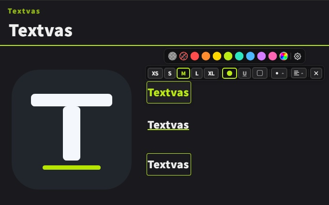

![]() Textvas
TextvasTextvas User Guide



| Ctrl+ | |


日本語 · English · 简体中文 · 繁體中文 · 한국어 · Русский · Українська · Español (España) · Español (LatAm) · Português (BR) · Português (PT) · Deutsch · Français · Italiano · Polski · Čeština · Magyar · Română · Български · Ελληνικά · Türkçe · Nederlands · Svenska · Dansk · Norsk · Suomi · Tiếng Việt · ไทย · Bahasa Indonesia

| Ctrl+N | |
| Ctrl+B | |
| Ctrl+O | |
| Ctrl+S | |
| Ctrl+Shift+S | |
| Ctrl+Alt+E | |
| Ctrl+Shift+E | |
| Ctrl+Shift+J |
| Ctrl+Z | |
| Ctrl+Y | |
| Ctrl+C | |
| Ctrl+X | |
| Ctrl+V | |
| Ctrl+A | |
| Delete / BS |
| T | |
| L | |
| M | |
| I |
| Ctrl+↑ | |
| Ctrl+↓ | |
| Ctrl+← | |
| Ctrl+→ |
| Tab | |
| Q | |
| Ctrl+ | |
| Ctrl+0 |
| F | |
| Ctrl+P | |
| Alt+A | |
| Ctrl+L | |
| Ctrl+Shift+L |